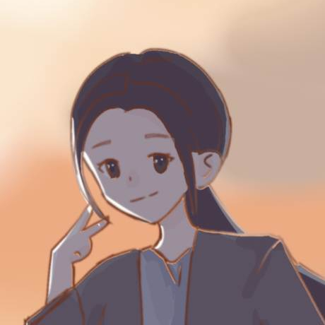
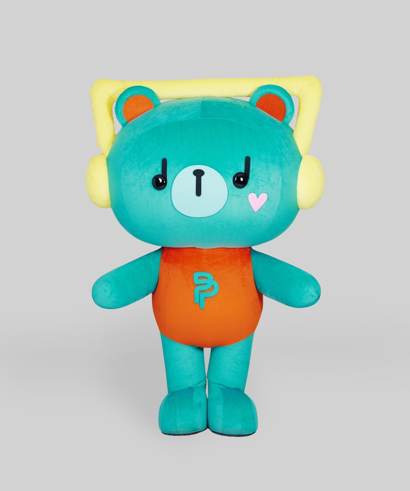
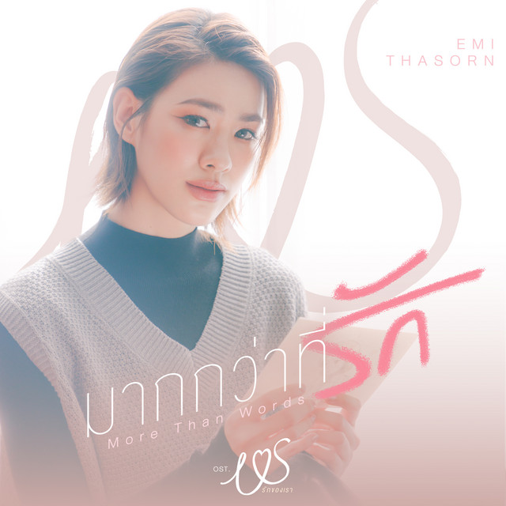
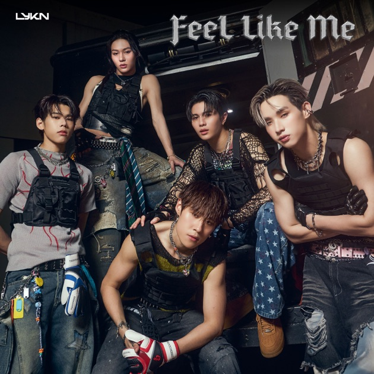
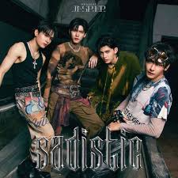

Name: Permpoon
是泰國GMMTV旗下一對熱門螢幕情侶 Pond (Naravit Lertratkosum) 與 Phuwin (Phuwin Tangsakyuen) 的官方吉祥物。在泰語中，「Permpoon」意為「增加」或「增長」。Pond 與 Phuwin 選用此名，是取自兩人名字縮寫「PP」，並寄予希望粉絲的幸福與成功也能持續增長的祝福。

卉的個人網站
是泰國GMMTV旗下一對熱門螢幕情侶 Pond (Naravit Lertratkosum) 與 Phuwin (Phuwin Tangsakyuen) 的官方吉祥物。在泰語中，「Permpoon」意為「增加」或「增長」。Pond 與 Phuwin 選用此名，是取自兩人名字縮寫「PP」，並寄予希望粉絲的幸福與成功也能持續增長的祝福。


泰國 GMMTV 旗下藝人 Emi Thasorn (เอมี่ ทสร) 為電視劇 《Us รักของเรา》(Us The Series) 演唱的正式插曲。歌詞表達了一種深情，認為單純的「我愛你」已經不足以表達內心的感受，想把最好的事物都給予對方，這種愛是無法用言語完全描述的。

泰國男團 LYKN 於 2025 年 10 月 14 日發行的單曲。它是該團體第一張專輯 《DUSK & DAWN》 中的一首曲目。這首歌的主題圍繞在坦率表達情感。歌詞描述當兩個人互有好感時，不要再隱藏或猶豫，如果你的感覺和我一樣（Feel Like Me），就應該大膽地說出來。

這是一首風格強烈且大膽的 T-Pop 舞曲。歌名 「SADISTIC」（虐待狂/施虐傾向）與泰文歌名 「แรงอีกนิด」（再用力一點）相呼應，歌詞描述了一種渴望更強烈、甚至帶點痛感的愛，表現出對感情極致快感的追求。
我喜歡追劇，特別是泰劇，因為喜歡看BL某天去網路上找劇而莫名入坑泰劇的人!
每個禮拜都在等劇更新的人就是我~~~( ºωº )
這裡是目前我看過的BL劇最喜歡的前五名(不分順序!) 左一是"Duang with you"，講述一名開朗的裝飾藝術系學生 Duang，在水燈節大膽告白後，努力追求高冷孤傲的音樂系天才 Qin，兩人在合作校園演出的過程中，將初戀的悸動轉化為彼此溫暖避風港的校園純愛故事。接下來是"Me And Thee"，這部劇（中文譯名為《清醒點，泰爾先生》）講述一名沉迷泰國狗血劇、社交能力奇差的前黑道少爺，僱用高冷內向的攝影師擔任戀愛教官想追求名模，卻在過程中反被教官收服的爆笑愛情喜劇。中間是"Khemjira"，一名擁有特殊體質、經常遭遇靈異體驗的少年 Khem，在尋求強大巫術法師 Phayam 守護的過程中，兩人從互相猜忌到在解開家族詛咒時，發展出一段跨越前世今生的靈異耽美愛情。 然後是"We Are"，講述四對性格迥異的大學好友，在校園日常與混亂的曖昧中，一起經歷吵鬧、互補並最終共同成長的純愛故事。最右是"ThamePo"，這部劇講述一名失意導演在為人氣男團拍攝紀錄片時，意外走進傲嬌隊長的心裡，並在幫助團員化解心結的過程中，收穫跨越偶像與現實的治癒系愛情。以上五部簡直是我的大推!!!當然還有很多讓我自從進泰圈以後看完真的會出不去的那種(*´▽`*)。
Sa Wa Dee Ka! 我是阿卉! 一個從去年9月突然喜歡上泰圈的人?!?! ——— 泰文聽得懂一點也會說一點?!不熟的時候我話很少，熟了以後我只會越來越吵థ౪థ